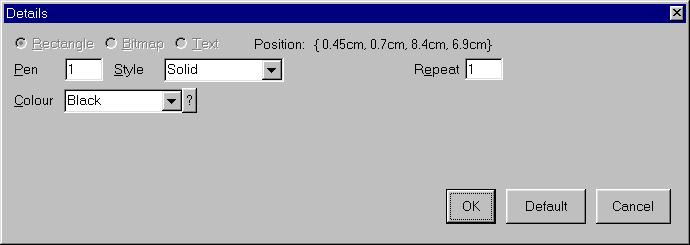
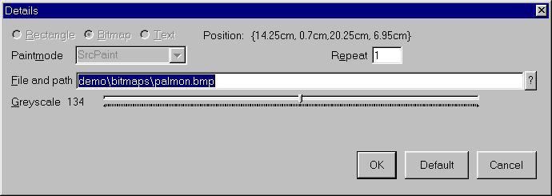
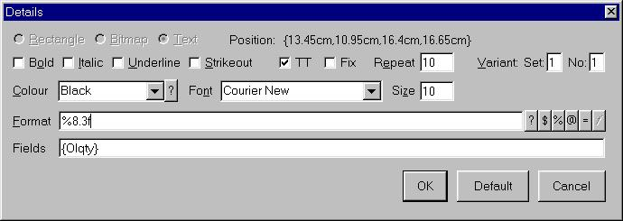
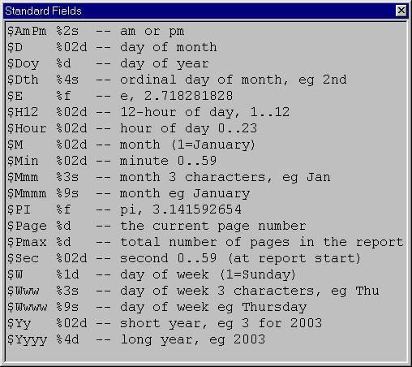
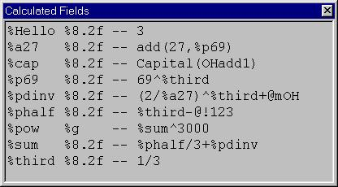
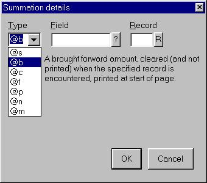

The Dictionary Lookup Window.
The same controls and key handling are used during report layout design as the report viewer.
Double click on an existing field to edit it or select Insert from the right click popup to insert a new field.
Previous ScreenShot Next ScreenShot

The Field Details (Graphic) Window.
When insert is selected, the field type can be changed between Graphic, Bitmap, or Text. Changing the selection alters the Detail window contents. When editing a field, as shown above, the type selection radio buttons are disabled.
OK and Cancel should be self-explanatory. The Default button saves the settings for use as a default when further new fields are entered during the current session.
Previous ScreenShot Next ScreenShot

The Field Details (Bitmap) Window.
Previous ScreenShot Next ScreenShot

The Field Details (Text) Window.
| <blank> | The field appears in this position, on every page. |
|---|---|
| 1 | Each occurence of the field in the datastream appears precisely once on the report. |
| n | The field repeats down the page n times. |
| n x m | The field repeats n times down the page, for m columns, eg |
| 3x2 | 1 4 2 5 3 6 |
| n y m | The field repeats m times across the page, for n lines, eg |
| 3y2 | 1 2 3 4 5 6 |
After entering a repeating field and pressing OK, select resize from the right click menu to set the spacing of the repeated items.
When the same value(s) should be printed in more than one place on the report, for example a tear-off slip on a remittance advice, then the field should be defined independently in both positions, In which case a check is made to ensure they repeat the same number of times.
If the repeat field is not blank or 1, the variant group and set are shown.
When, for example, OIprod is printed, it marks slots for other fields in the same variant set but with a different variant number as used, to prevent overprinting by subsequent serial and comment details. If the three lines above repeat ten times down the page, when the first record (say OI) is detected in the datastream, it occupies slot 1 and slot 1 for serial and comment details is marked as used. If the next record is, say, a serial number, it goes in slot 2 and slot 2 is marked as used on the detail and comment fields.
When variant numbers are in use, the layout designer displays the field in the corresponding slot position on the page.
An example of this is shown on the sample invoice print from pptest.exw.
The use of variant sets should be independently documented for future reference.
A summary of field formats can be found here or
here. Note in particular that right justification processing occurs
on single items when the second character of the format string is a non-zero number, and
it is of type d, f, or s. In some cases it may be necessary to avoid this by coding eg:
%s %asstring
where
%asstring is sprintf("%8.2f",<actual field>)
The six buttons to the right of the field window correspond to pressing F1 to F6 in the
Format field. The sixth button is always present, but disabled on this window, to be
consistent with the Calculated Fields Window, on which the fifth
button is disabled (even if it could open a second copy of that window, it would just be
far too confusing!).When a function key F1..F6, or the corresponding button is pressed, a field lookup window is displayed:
| F1 | ? | Dictionary field, eg OIvat. | Screenshot |
|---|---|---|---|
| F2 | $ | Standard field, eg $Page. | Screenshot |
| F3 | % | Previously defined calculated field, eg %due. | Screenshot |
| F4 | @ | Summation, eg @cOInetOH. | Screenshot |
| F5 | = | Define new calculated field (not via F5). | Screenshot |
| F6 | f | Functions (only via F5). | Screenshot |
When fields are selected from the lookup, the name and format are automatically inserted, with required brackets and commas.
Quick Example: In the Format field, type "Page ", then press F2 and select $Page.
The Format field now shows "Page %d" and the Fields "{$Page}".
Now type " of ", press F2 and select $Page again (make a deliberate mistake).
The Format field now shows "Page %d of %d" and the Fields "{$Page,$Page}", (not quite what we want).
Backspace twice to delete the last %d, and press F2, this time select $Pmax.
The Format field now shows "Page %d of %d" and the Fields "{$Page,$Pmax}".
This is displayed as "Page $Page of $Pmax" on the report layout, and of course as eg "Page 1 of 43" on the preview and printed page.
If the appropriate format qualifier (eg "%d") is deleted before pressing a function key or pressing one of the six buttons, the corresponding field entry is replaced.
While it is possible to edit the Fields entires by hand, hopefully in most cases this will not be necessary.
Note that it is not possible to specify calculations directly in the field list, for example "%8.2f" {OHnet+OHvat} is not allowed, instead "%8.2f" {%due}, with %due defined as OHnet+OHvat, must be used. This is necessary to maintain a clean aspect in the layout editor, as eg "Vat %vat" keeps the display neat and tidy, but "Vat ((OIgross=0)*OInet*0.175+(OIgross!=0)*(OIgross-floor(OIgross/1.175)))/100" certainly does not.
The Dictionary Lookup Window.
Cursor to the required line and press Return, or double click on a line to select the field.
A record lookup is available by pressing F1 or Ctrl Q.
Text from this window may also be selected and copied to the Windows clipboard using the mouse.

The Standard Fields Lookup Window.
Cursor to the required line and press Return, or double click on a line to select the field.
Suggestions for additional standard fields are welcome.
Examples of use (see The Field Details (Text) Window):
| Format | Page %d of %d | %s, %s %s %d %02d:%02d%s |
|---|---|---|
| Fields | {$Page,$Pmax} | {$Wwww,$Dth,$Mmmm,$Yyyy,$H12,$Min,$AmPm} |
| Example output | Page 1 of 37 | Thursday, 2nd January 2003 02:37pm |
Note that by pressing F2 and selecting from the popup, the only text which must be manually entered is "Page " and " of " for the first example(middle column), and a comma, four spaces and a colon(":") in the second example. The Fields list is built automatically (but can be edited when necessary).
Standard fields may also be used on calculated fields. The following standard calculated fields are distributed:
| %time | sprintf("%02d:%02d%s",{$H12,$Min,$AmPm}) | eg 02:37pm |
| %sdate | sprintf("%02d/%02d/%02d",{$D,$M,$Yy}) | eg 25/12/03 |
| %ldate | sprintf("%s, %s %s %d %02d:%02d%s", {$Wwww,$Dth,$Mmmm,$Yyyy,$H12,$Min,$AmPm}) | eg Thursday, 2nd January 2003 02:37pm |

The Calculated Fields Lookup Window.
Cursor to the required line and press Return, or double click on a line to select the field.
The contents of the calculated fields window can be selected and copied (via the right click menu or Ctrl A, Ctrl C) for documentation purposes.

The Summation Definition Window.
Summation fields are shown as eg @sOIvatOH. The field name consists of four parts.
The first character @ indicates it is a summation field.
The second character determines which of the seven types it is:
| Type | Field | Record | Meaning |
|---|---|---|---|
| s | Yes | Yes | Sum the specified field; print and clear when the specified record is encountered, and at end of datastream. |
| b | Yes | Yes | A brought forward amount, cleared (and not printed) when the specified record is encountered, printed at start of page. |
| c | Yes | Yes | A carried forward amount, cleared (and not printed) when the specified record is encountered, printed at end of page. |
| f | Yes | No | A final summation, printed at the end of the report. |
| p | Yes | No | A page summation, printed and cleared at the end of each page. |
| n | No | Yes | Page number within section (Page n of m). [Use $Page for whole report.] |
| m | No | Yes | Number of pages in section (Page n of m). [Use $Pmax for whole report.] |
The field to be summed is the third part of the name (not present on section numbers).
This should be a numeric field from the datastream.
The last two characters of the name (not present on final and page summations) is the controlling record which determines when the accumulator should be reset.
The example invoice print has examples of all these types.
Remember I said the datastream carries a simple, common sense semantic statement of intent? In some ways the records trigger events on the report, such as start a new page, or print a subtotal (if it helps to think of it that way).
Suppose, as in the example dictionary, sales orders are passed in OH records. Further
imagine there are some additional records related to the order header, such as a delivery
address record (DA) or the customer details perhaps, and the the order item (OI) records
might also have batch, serial, comment, delivery, or other information associated with them
also passed as different records (say OB,OS,OC,OD).
Also let's specifically concentrate on the carried forward summation @cOIqtyOH.
The report generator obviously knows if you specified, say print 10 order items per page,
then obviously it knows not to throw a page unnecessarily when any OI..OD are found.
It also knows that if it must start a new page, then the carried forward amount should be
printed.
However, if another DA record is encountered, before the OH, it will trigger a page break,
and will also cause the carried forward amount to be printed. If you know for certain that
the DA record always occurrs before every OH record, then the summation can just be
changed to @cOIqtyDA, otherwise the datastream will need modifying.
If you are going to use a record to control subtotalling, then it should logically
correspond to the reporting event, and must be physically placed in the datastream
before all other related records.
In some cases it may be necessary to invent new records for the datastream for the explicit
purpose of controlling this.
For more advanced report subtotalling, consider directly manipulating the pagetable
via the pageSequenceHook routine.
Avoid the use of s and f style summations (sum over section and final sum) when these
can more efficiently be coded in the datastream creation program.
Note that only type s summations may be used on repeating fields (and any calculation
used by a repeating field) since, by definition, the remainder are page-oriented.
Table of Contents Previous Page - Reference Section Part 1 Next Page - Reference Section Part 3